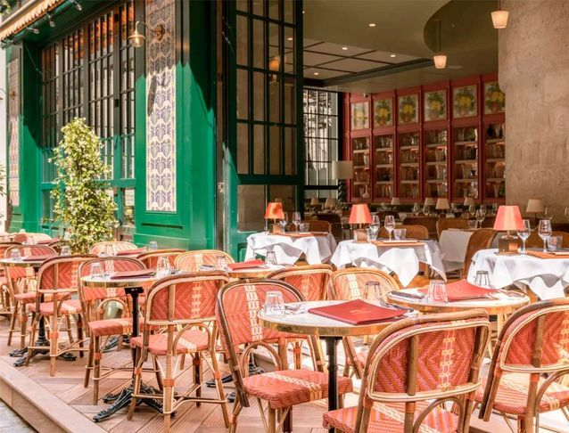

Notre Esprit
Réserver votre table
La chaleur du Nord, le goût du Vrai
Fondé en 1987, Le Vieux Moulin est une institution du Vieux-Lille. Notre décor fait de bois ancien, de carreaux de Delft et d'objets chinés vous plonge dans l'atmosphère des estaminets d'autrefois. Nous défendons une cuisine populaire de haute volée : chaque plat est préparé chaque matin avec des produits sourcés localement.
Niché entre les boutiques de luxe et les galeries d'art du Vieux-Lille, nos Carbonnades Flamandes, Potjevleesch maison et Welsh Royaux régalent lillois et visiteurs depuis près de 40 ans. Notre équipe vous accueille avec la chaleur que l'on réserve aux amis.
Frites fraîches maison
Fromages du terroir
Bières de garde locales